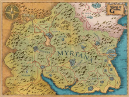
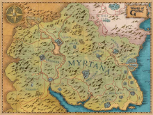

Gothic
Świat Gothic
W świecie gothica mozna poznać ciekawych ludzi oraz zapolować na bestie. Na początku gry główny bochater o imieniu Bezi rozpoczyna swoją przygode jako niewolnik w górniczej dolinie. Tam poznaje przyjaciół, którzy stają się kompanami i razem podejmują działa w celu zniczenia bariery.
Należ do trzech obozów Starego, Nowego oraz na bagnie gdzie palą bagienne ziele. Należy pamiętać o doskonaleniu swoich umiejętności, które dzięki expowi możesz wymieniać na siłę i zręczność, która pozwoli ulepszać swoje bronie.
Ogromny świat
Saga Gothic jest podzielona na trzy sagi + 2 dodatki każda z nich opowiada o fascynującej opowiadania pełnych przygód i fantazy. Odwiedzaj miejsca związane z nymi chodźby Górniczą doline czy wieża Xardasa oraz miasto Korinis gdzie podejmujesz działanie związane z zadaniami powierzonymi ci przez Lorda Hagena. Czy zwiedzaj świat w gothic III gdzie spotkach króla Robala.
Każda przygoda głównym bohaterem jest ekscytująca i bardzo skomplikowana. Wykonujesz zadania w przygodzie jak i ogólne.
Mapa i kartografia
Mapa grze jest podzielona na trzy obszary Górnicza Dolina, Miasto Korinis i jego obrzaża oraz świat trzeci.
 

Widok map w świecie Gothic